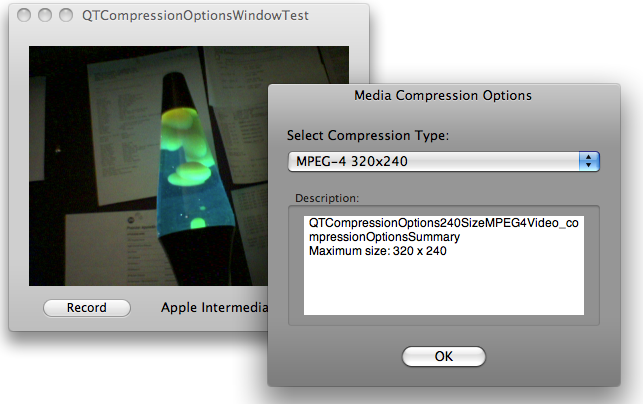
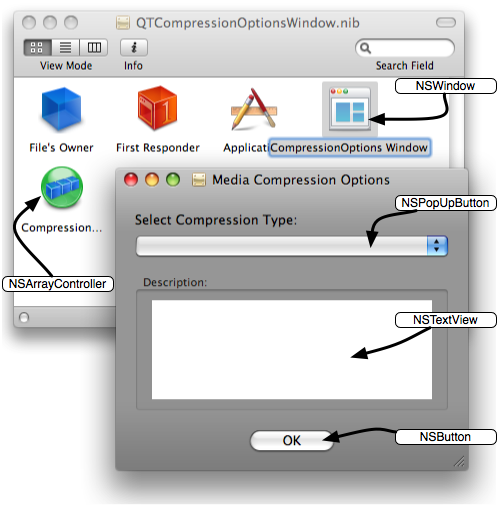
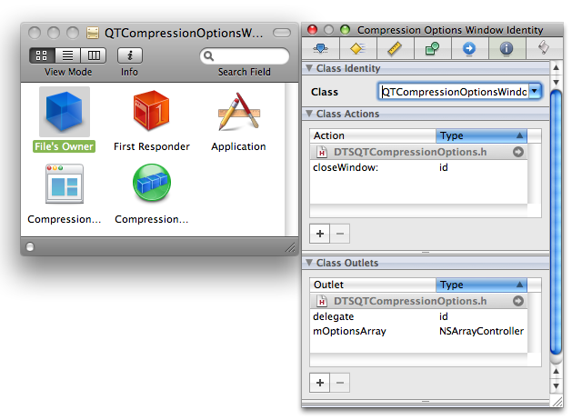
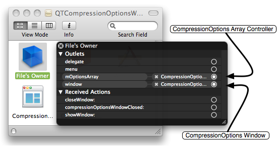
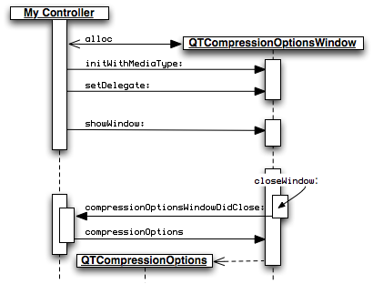
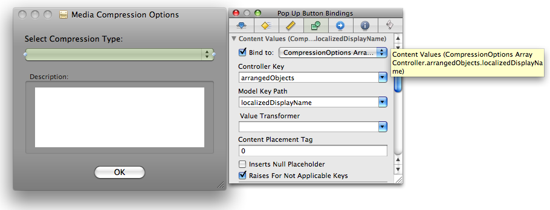
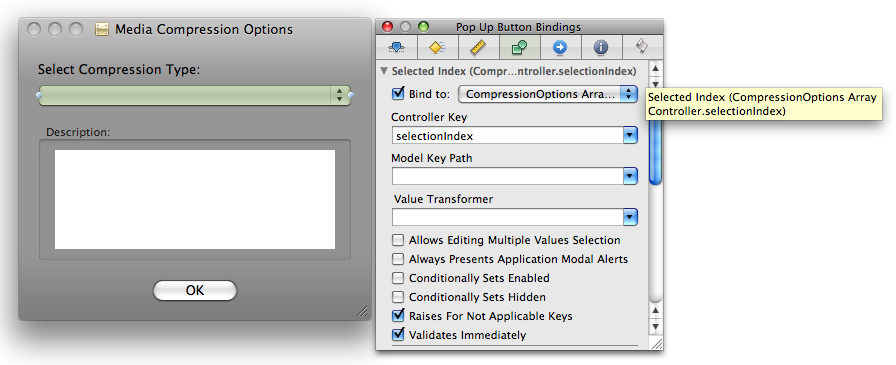
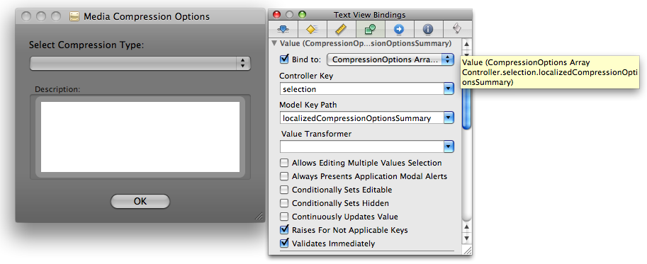
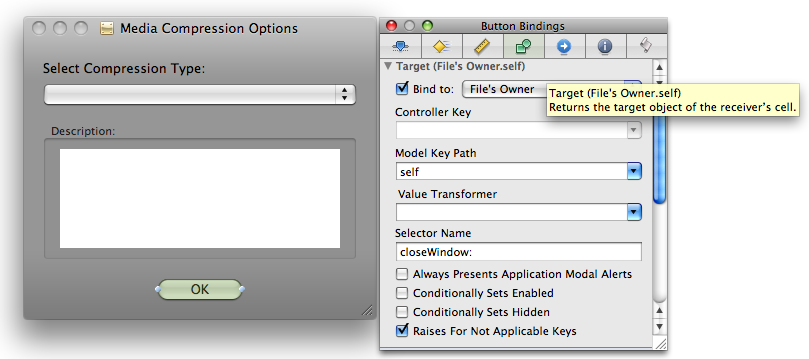

|
IntroductionIf you're a QuickTime or Cocoa developer working with audio and video capture, you'll want to take advantage of the new capture classes and methods introduced in Mac OS X v10.5 and the latest release QuickTime. There are now 15 new capture classes available in the QTKit framework that are designed to expand the range of media services developers can incorporate in their multimedia applications. These new capture classes and methods provide your application with pro-grade, frame-accurate capture of audio and video media from one or more external sources. Your captured media can be record to a QuickTime movie (.mov) file or displayed in a Cocoa view and may also be compressed using a common set of compression formats. You can also directly access decompressed capture buffers for custom processing. This Technote describes the compression features of QTKit Capture using the QTCompressionOptionsWindow code sample that demonstrates how to capture video media to a movie file using the methods available in the QTKit capture classes while also allowing the user to select how that video will be compressed. After a quick read of the QTKit Capture Programming Guide the task may seem very easy to do, requiring usage of only a few capture classes; That being said, what if you not only want to specify the compression method for the media being captured but also want to manage a list of compression settings via a user interface. How can those tasks be accomplished? The QTCompressionOptionsWindow code sample demonstrates a technique you can use to manage compression settings. This is achieved by using a self-contained re-usable class that provides a user interface for selecting different compression settings via a Media Compression Options Window, as shown in Figure 1. You can accomplish this with less than 30 lines of Objective-C code by taking advantage of Cocoa bindings. Download the QTCompressionOptionsWindow sample and follow along. The sample contains three files that are discussed in this Technote:
Figure 1: Media Compression Options Window.  The QTCompressionOptions ClassCompression settings are represented in the QTKit Capture Framework by the Note: For more information about the To create a Listing 1: Create compression settings describing H.264 320x240.
QTCompressionOptions *myCompressionOptions;
myCompressionOptions = [QTCompressionOptions compressionOptionsWithIdentifier:
QTCompressionOptions240SizeH264Video];
[mCaptureMovieFileOutput setCompressionOptions:myCompressionOptions
forConnection:mVideoConnection];
While this is very easy to do, the compression settings are hardcoded and therefore the practical uses limited. To present a user interface, you need to dynamically build a list of all the compression options currently available for a given media type and display them appropriately. The The QTCompressionOptionsWindow Class InterfaceNow that you have an idea of how QTKit Capture manages compression settings and how to create these settings objects dynamically, you can define a simple class that manages both an arbitrary number of
@interface QTCompressionOptionsWindow : NSWindowController {
@private
IBOutlet NSArrayController *mOptionsArray;
NSString *mMediaType;
IBOutlet id delegate;
}
// designated initializer
- (id)initWithMediaType:(NSString *)inMediaType;
// compression options of this media type are being managed by the controller
- (NSString *)mediaType;
// manage compression options for the media type passed in, should only be
// QTMediaTypeVideo or QTMediaTypeSound, nil is equivalent to QTMediaTypeVideo
- (OSStatus)setMediaType:(NSString *)inMediaType;
// returns the selected QTCompressionOptions instance
// that may be used with -setCompressionOptions:forConnection:
- (QTCompressionOptions *)compressionOptions;
// closes the window and notifies the client of the class via delegation
- (IBAction)closeWindow:(id)sender;
// manages controller delegate
- (id)delegate;
- (void)setDelegate:(id)value;
@end
// a client of this class should implement this delegate method
// which is called when the compression options window is closed
// the client may ask the sender for the selected QTCompressionOptions instance
@interface NSObject (QTCompressionOptionsWindowDelegate)
- (void)compressionOptionsWindowDidClose:(id)sender;
@end
Since An Since the class manages an array of Finally, an The QTCompressionOptionsWindow user interfaceNow that the Objective-C class is defined, you use Interface Builder to build the user interface as shown in Figure 2. Figure 2: Media Compression Options User Interface.  All the interface elements in Figure 2 are common and should easily be recognized. The key elements are; An The File's OwnerNote the class of the File's Owner object in Figure 3. It has been set to reflect that it will represent an instance of the The File’s Owner acts as a placeholder for the object that will manage the contents of the nib file after it is loaded. Our nib file contains two objects that must be referred to by instances of The File's Owner object provides a way to make connections to objects in the nib file like the Figure 3 shows that the Class field has been changed to "QTCompressionOptionsWindow" as the File's Owner Class Identity. Figure 3: File's Owner Class Identity.  Once File's Owner is configured, connections may be made between outlets ( When the nib file is loaded, objects in the nib file are created, initialized and connected properly. Figure 4: File's Owner Connections.  The QTCompressionOptionsWindow Class ImplementationIf you take a quick tour of the methods used to work with The Listing 2: initWithMediaType: method.
// designated initializer
// call with QTMediaTypeVideo or QTMediaTypeSound to initalize
- (id)initWithMediaType:(NSString *)inMediaType
{
// call NSWindowController designated initializer
if (self = [super initWithWindow:nil]) {
// inappropriate media types will bail on init
if ([self setMediaType:inMediaType]) {
[self release];
return nil;
}
}
return self;
}
The Listing 3: setMediaType: method.
// set the media type of the compression options you want managed
- (OSStatus)setMediaType:(NSString *)inMediaType
{
// accept nil as a request for the default - the more common vide options
if (nil == inMediaType) inMediaType = QTMediaTypeVideo;
// only accept Video or Audio since they are the only valid compression option media types at this time
if ((NO == [inMediaType isEqualToString:QTMediaTypeVideo])
&& (NO == [inMediaType isEqualToString:QTMediaTypeSound])) return invalidMedia;
// only do the set up if the media type has changed
if ([mMediaType isEqualToString:inMediaType]) return noErr;
[mMediaType release];
mMediaType = [inMediaType retain];
// make sure the nib is actually loaded at this time,
// required for our connections to the array controller and so on
if (![self isWindowLoaded]) { [self window]; }
// make sure the array controller is empty
[mOptionsArray removeObjects:[mOptionsArray arrangedObjects]];
// load it up with the currently chosen compression options objects
NSArray *optionsIdentifiers = [QTCompressionOptions
compressionOptionsIdentifiersForMediaType:inMediaType];
NSEnumerator *enumerator = [optionsIdentifiers objectEnumerator];
UInt8 index;
UInt8 count = [optionsIdentifiers count];
for (index = 0; index < count; index++) {
QTCompressionOptions *options = [QTCompressionOptions
compressionOptionsWithIdentifier:[enumerator nextObject]];
[mOptionsArray addObject:options];
}
[mOptionsArray setSelectionIndex:0];
return noErr;
}
The Listing 4: setDelegate method.
- (void)setDelegate:(id)inDelegate {
delegate = inDelegate;
}
The Listing 5: closeWindow action.
- (IBAction)closeWindow:(id)sender
{
[self close];
}
After the window is closed a Listing 6: Sending compressionOptionsWindowDidClose: to the delegate.
// inform the client of this class that the window has been closed
// the client will then be able to ask for the currently selected
// compression options object
- (void)close
{
[super close];
if (nil != delegate && [delegate respondsToSelector:@selector(compressionOptionsWindowDidClose:)] ) {
[delegate compressionOptionsWindowDidClose:self];
}
}
The delegate may then retrieve the currently selected compression settings by sending a Figure 5 is a visual representation of a typical calling sequence when using the Figure 5:  Using Cocoa BindingsBindings are a way to connect user interface elements to their underlying data without writing a lot of (or any) glue code to synchronize the two. To implement the user interface, a connection called a binding is created between the
Listing 7: QTCompressionOptions display methods. - (NSString *)localizedDisplayName; - (NSString *)localizedCompressionOptionsSummary; The content of the pop-up is provided by sending the Note: If you have noticed the compression options summary description displayed in the text view doesn't look very helpful, you're right. In current versions of QTKit (QuickTime 7.4.x), the Here's how this is set up in Interface Builder: NSPopUpButtonContent ValuesIn the Value Selection section of the Bindings Inspector for Content Values are arrays of strings that are displayed as the items in the The Controller Key is set to Establishing this binding in Interface Builder is equivalent to programatically sending the Figure 6: Content Values binding.  Selected IndexIn the Value Selection section of the Bindings Inspector for Selected Index is an integer value that specifies the index of the selected item in the The Controller Key is set to Figure 7: Selected Index binding.  NSTextViewValueIn the Value Selection section of the Bindings Inspector for Value is the The Controller Key is set to Establishing this binding in Interface Builder is equivalent to programatically sending the Figure 8: Value binding.  NSButtonTargetIn the Target section of the Bindings Inspector for Target is the object that receives a message corresponding to the selector name when the The Model Key Path is Establishing this binding in Interface Builder is equivalent to programatically sending the Figure 9: Target binding.  Using QTCompressionOptionsWindow In Your ApplicationUsing the QTCompressionOptionsWindow takes very little code. Here's an example of some typical code that may be used to create and use an instance of Declare a reference to a Listing 8: MyController.h.
#import <QTCompressionOptionsWindow.h>
@interface MyController : NSObject {
...
// the Compression Options Window
QTCompressionOptionsWindow *mCompressionOptionsWindow;
}
...
Allocate an instance of the Listing 9: MyController.m awakeFromNib.
- (void)awakeFromNib
{
// code to initialize capture objects
...
// ******** Compression Options Window *****
// create our window with the media type and set ourselves as the delagate
// you could also instantiate the window directly in the nib and hook up the deleate
// then simply call showWindow or setMediaType if you want to change the list of compression options shown
mCompressionOptionsWindow = [[QTCompressionOptionsWindow alloc] initWithMediaType:QTMediaTypeVideo];
if (nil == mCompressionOptionsWindow) {
NSLog(@"Compression Options Window did not load!\n");
return;
}
[mCompressionOptionsWindow setDelegate:self];
...
}
Display the window at some future time as required. Listing 10: MyController.m showCompressionOptionsWindow:.
- (IBAction)showCompressionOptionsWindow:(id)sender
{
[mCompressionOptionsWindow showWindow:sender];
}
Implement a delegate method called This delegate method can retrieve the compression settings selected from the pop-up list by sending the message Send the Listing 11: MyController.m delegate method.
// when the options window is closed this delegate method gets called
// ask for the chosen QTCompressionOptions object and configure the file output
// object accordingly
- (void)compressionOptionsWindowDidClose:(id)sender
{
// get the selected compression setting
QTCompressionOptions *myCompressionOptions = [sender compressionOptions];
if (nil != myCompressionOptions) {
[mCaptureSession stopRunning];
// configure the file output to compress this connection using the chosen
// compression settings
[mCaptureMovieFileOutput setCompressionOptions:myCompressionOptions
forConnection:[[mCaptureMovieFileOutput connections] lastObject]];
[mCaptureSession startRunning];
// update the UI so it displays the chosen compression type
self.displayName = [myCompressionOptions localizedDisplayName];
NSLog(@"%@\n", [myCompressionOptions localizedDisplayName]);
} else {
NSLog(@"Bad Compression Options Object Returned!\n");
}
}
ConclusionBy taking advantage of Cocoa bindings and standard user interface elements, you saw how to create a user interface to use with the QTKit Capture framework with less than 30 lines of Objective-C code. This of course just scratches the surface of what can be done with QTKit and Cocoa. Experiment with the code, expand on it, make it unique to your application and most of all, have fun. ReferencesDocument Revision History
Posted: 2008-03-11 |
|